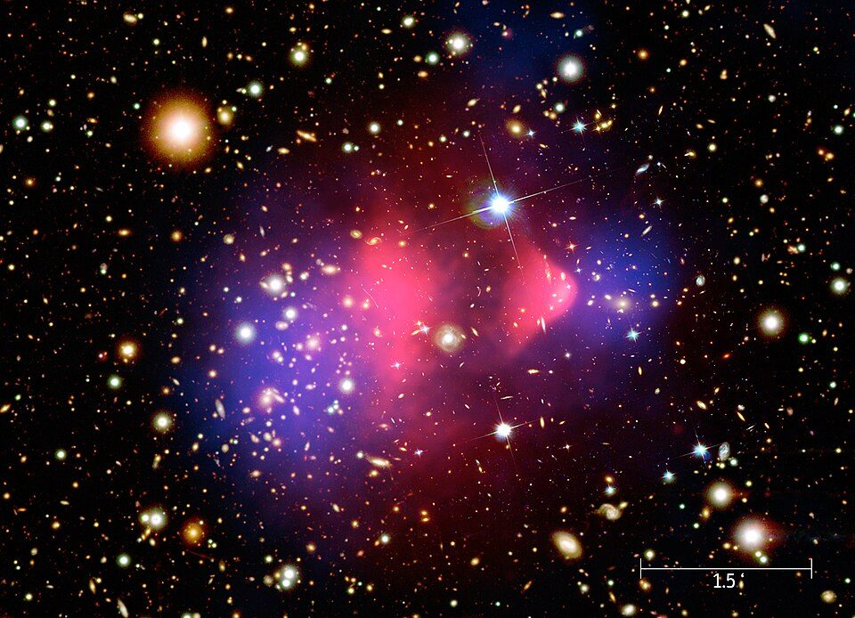

Numbers and records of the universe
The biggest, the hottest, the fastest and the farthest: the records of the cosmos on a single page.


The universe breaks records that defy the imagination. These are some of the most astonishing we know today, although many change every few years thanks to new telescopes.
In the solar system
| Record | Holder | Figure |
|---|---|---|
| Largest planet | Jupiter | 139,820 km across |
| Hottest planet | Venus | 465 °C on average |
| Coldest planet | Uranus | −224 °C |
| Shortest day | Jupiter | 9 h 56 min |
| Longest day | Venus | 243 Earth days |
| Fastest winds | Neptune | 2,100 km/h |
| Highest volcano | Olympus Mons (Mars) | ≈ 22 km |
| Largest moon | Ganymede | 5,268 km |
| Planet with most moons | Saturn | 274 |
| Most distant object visited | Arrokoth | 6.6 billion km |
Stars and black holes
- Largest known star: candidates such as UY Scuti or Stephenson 2-18, with a radius 1,700 to 2,150 times the Sun's. Placed where the Sun is, its surface would extend beyond the orbit of Jupiter or even Saturn.
- Most massive star: R136a1, in the Large Magellanic Cloud, at about 200 solar masses.
- Nearest star: Proxima Centauri, 4.24 light years away.
- Brightest star in the night sky: Sirius, 8.6 light years away.
- Largest black hole: those powering some quasars, such as TON 618, are estimated at tens of billions of solar masses.
- Densest object that is not a black hole: neutron stars. A teaspoon of their matter would weigh about a billion tonnes.
Galaxies and the universe
- Most distant confirmed galaxy: the James Webb telescope has confirmed galaxies such as MoM-z14, whose light set out when the universe was about 280 million years old.
- Nearest large galaxy: Andromeda, 2.5 million light years away. It can be seen with the naked eye from dark sites.
- Largest structure: superclusters and "walls" of galaxies more than a billion light years long, like the Hercules–Corona Borealis Great Wall.
- Coldest known natural place: the Boomerang Nebula, at −272 °C, just one degree above absolute zero and colder than the cosmic background itself.
- Highest temperature: in the first instants of the Big Bang, trillions of degrees were reached.
Dizzying numbers
- The observable universe is estimated to contain about 2 trillion galaxies and more stars than grains of sand on all of Earth's beaches.
- The Milky Way holds between 100 and 400 billion stars.
- The observable universe is about 93 billion light years across.
- Every second, Earth travels 30 kilometres along its orbit, and the Sun carries the whole solar system at 230 km/s around the centre of the galaxy.
